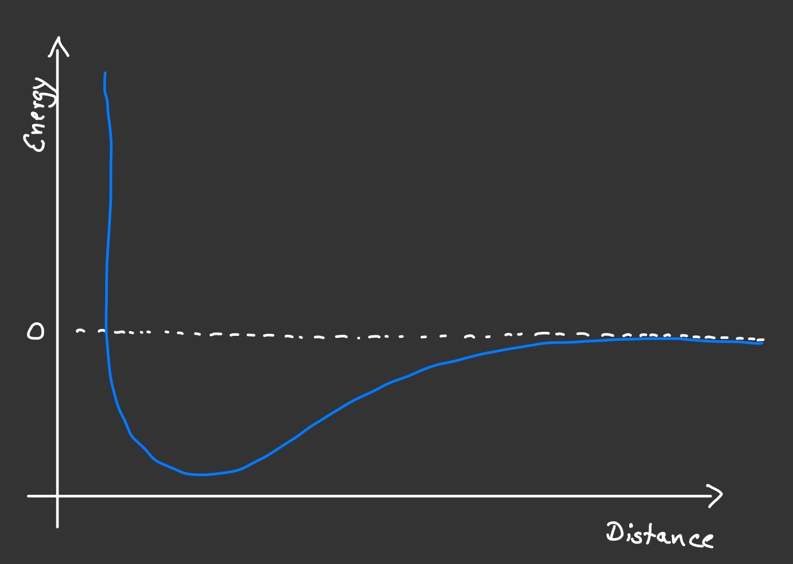
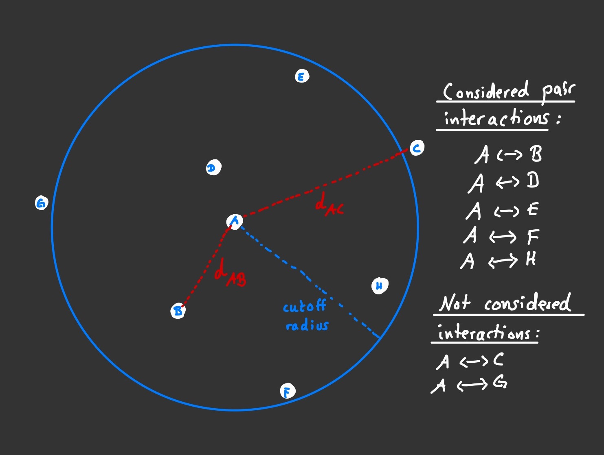

Molecular Dynamics
I implemented a small Molecular Dynamics (MD) simulation in order to play around with it. MD simulations are used in physics and chemistry since the beginning of scientific computation back in the 1950s, but obviously their scope has widened considerably with the advances in compuational capabilities in der 1990s. MD can be used to derive properties and behaviour of matter. The individual particles that matter is made of are simulated explicitly, either as atoms or molecules or in the very big picture as stars in the simulation of galaxies or the universe as a hole. Their interaction is represented by what is appropriately called a force field. They combine the effects of an attractive force between two particles at a distance (electrostatic Van-der-Waals interactions for atoms, gravity for stars) and a repulsive force that acts between particles that come very close to each other (atomic orbitals cannot overlap). In effect, there is a "sweet spot" at a specific distance where two particle would rest if they don't have sufficient kinetic energy to overcome the attractive force and drift apart. This is what happens in solids. Gases are made up of particles that scatter around freely and mostly undisturbed. Occasionally, two particles meet and repell each other, just like billard balls do. I simulated an ideal gas and used the very popular force field that is called after its creator Sir John Lennard-Jones.
The rationale behind MD as laid out above is very simple. Its implementation is mostly straightforward as well, alas with a few neccessary tweaks for computational reasons. The interaction between two particls is a well understood problem in physics and it can be solved by taking (and integrating) Newton's fundamental laws of motion. Since we are dealing with (usually many, many) more than just two particles, the solution to this two body problem needs to be extended for an n-body problem. Unfortunately, there is no analytical solution even for the three body problem, let alone when n rises in the regions of millions or billions. The solution therefore must be computed numerically. For MD simulations, the n body problem is split into many two body problems, where the solutions to each individual two body problem are combined to form the solution for the entire many body system. In order to keep the number of computational steps feasible, some further tricks can be employed. Because the strength of the force between particles that are far apart is approaching zero fairly quickly, one usually defines a cutoff distance after which no two body interactions are considered at all. For each particle a list of close neighbours is kept and updated and only pairs within this list are considered in the calculation of the overall acting force on the respective particle. Of course, one should also keep track of pair interactions that have been computed earlier, so when moving on to the next particle and computing its overall force, the interaction with its neighbouring predecessor is already known.

Each pair interaction is computed for a given distance between the particle and one of its neighbours. The force fields gives the force acting on the particle in that direction, which has the effect of accelerating the particle along that direction. The result is a velocity component. Summed over all pair interactions, the particle experiences an overall force and it will move towards an overall direction. As easy as this is, the devil lies in the fact that as soon as this (and, of course, all other!) particle has changed its location, the acting forces will be different at this new location as well. So we need to re-calculate everything. This will give us new coordinates with new forces and new velocities, and we can see how the entire machinery of MD begins to spin. With this incremental progression, we need to make sure that each iteration (called a "time step") is small enough so as to make sure the overall motion of all the particles in the system remains smooth.

My go at a very simple MD simulation made use of the popular velocity verlet integration algorithm, a Lennard-Jones force field and the simulation box has what is called periodic boundaries. The idea is that one simulation box is explicitly computed, and mirror images of itself are attached each of its eight faces, effectively making the space infinitely large. Often, one implements this in such a way that if a particle that moves towards the boundary of the simulation box and it would leave the box in the consecutive time step, its position is immediately shifted by the width of the box, making it enter the simulation box via the opposite side of where it left. To keep computation time modest, I simulated around a hundred particles with up to one million time steps. The output data in the form of x, y and z coordinates were then fed into a molecular data visualisation tool that can display the actual particles and their motion over (simulation) time. Initially, all particles are randomly distributed and given a random velocity, so the system needs to run for a short while until the "real" interactions have taken over the dynamics of the particles. This process is called equilibration.
There are obviously many more things you can do and I plan on extending this rudimentary implementation to include statistics and more sophisticated features. One such extension is called a thermostat, which does exactly what thermostats at central heatings do, they make sure the temperature of the system, i.e. the average kinetic energy of all the particles, remains constant. The result of a quick and dirty version can be seen in the video below. Here, I steadily decreased the temperature, thereby freezing the particles' motion to the point where they cannot escape each others attraction (the sweet spot from above) and they form cluster (the bonding between particles is added to make the three dimensional cluster more visible on screen).